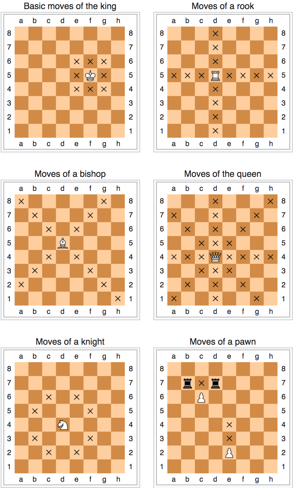
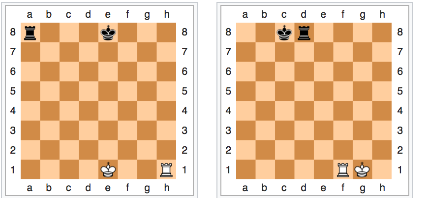
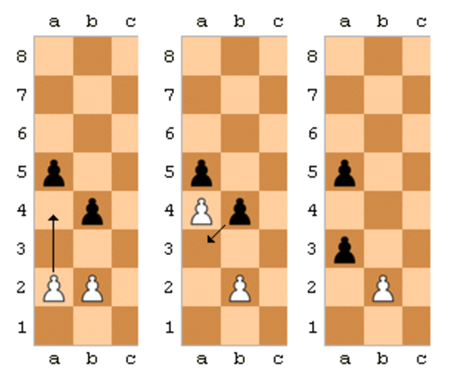

Chess is a game governed by set of rules. Each type of chess piece has its own directions to move. A piece moves into a vacant square except while capturing the opponents piece.
First let us start with
King : King moves exactly one square horizontally, vertically or diagonally. King can involve in castling only once in a game. Now what is this magical word “castling”? Yoy will see more explanation of castling later in this lesson and at the end of this material, I will provide you some useful links which helps in better understanding of the rulesinvolved while castling. Make sure to study them.. For now, hold on to your horses.
Note: Only during the time of castling the king can move more than one square.
Queen: Most powerful piece in the board. Queen moves any number of vacant squares in a horizontal, vertical, or diagonal direction. See the diagram below
Knight: A Knight moves to the nearest square not on the same rank, file or diagonal. (This can be thought of as moving two squares horizontally then one square vertically, or moving one square horizontally then two squares vertically—i.e. in an "L" pattern.) The knight is not blocked by other pieces: it jumps to the new location.
Bishop: A Bishop moves any number of vacant squares in any diagonal direction.
Rook: A rook moves any number of vacant squares in a horizontal or vertical direction. It also is moved when castling.
Pawn: Pawns have the most complex rules of movement:
♟ A pawn moves straight forward one square, if that square is vacant. If it has not yet moved, a pawn also has the option of moving two squares straight forward, provided both squares are vacant. Pawns cannot move backwards.
♟ Pawns are the only pieces that capture differently from how they move. A pawn can capture an enemy piece on either of the two squares diagonally in front of the pawn (but cannot move to those squares if they are vacant).

Castling: Castling is a way of creating a castle and protecting your king. It will be more understandable if I explain it to you diagrammatically. See the two boards down
First diagram from the left is King side castling and the second one is queen side castling.
Now you understand what is castling and what is the positional change after castling. If you need a deeper understanding start playing chess and do some exercises and you will become the master of it.

En passant: This is one of the most confusing and most unknown rules in chess which creates a confusion in beginners mind. I will try my best to explain this to you. But again, practice is the only way to master it.
When a pawn advances two squares from its original square and ends the turn adjacent to a pawn of the opponent's on the same rank, it may be captured by that pawn of the opponent's, as if it had moved only one square forward. This capture is only legal on the opponent's next move immediately following the first pawn's advance.
The diagrams on the left demonstrate an instance of this: if the white pawn moves from a2 to a4, the black pawn on b4 can capture it en passant, moving from b4 to a3 while the white pawn on a4 is removed from the board.
Check : A king is in check when it is attacked by an enemy piece. There are some possible ways to get out of check
♟ Move the king to a square where it is not threatened.
♟ Capture the threatening piece (possibly with the king).
♟ Block the check by placing a piece between the king and the opponent's threatening piece